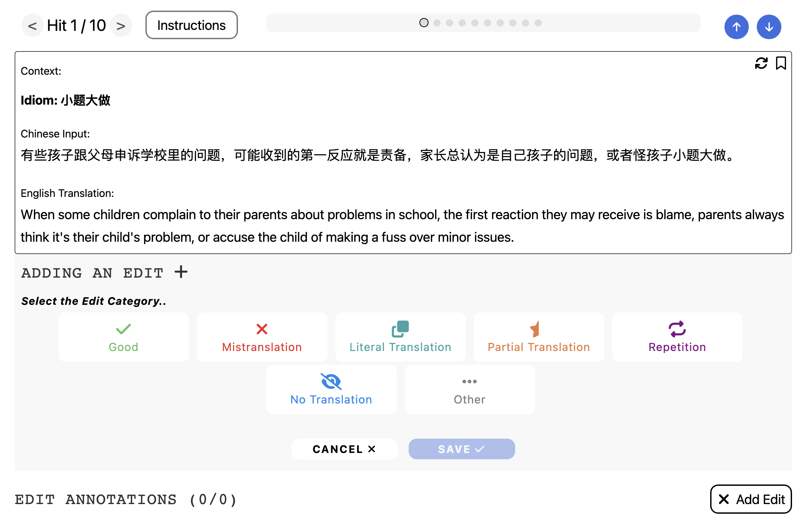

Introduction
Welcome! In this project you will read simplified Chinese sentences with Chinese idioms and their English translation. Your task is to evaluate and categorize the translation of Chinese idiom.
This qualification HIT will train you to perform this task. You must be able to:
- Understand Chinese idioms (or look up their meaning)
- Evaluate the quality of translated Chinese idioms
- Identify translation type in each instance
Here's the interface we are going to use:
Basic Demographics
We're collecting basic demographic information for use in our research.
What gender do you identify with?
- Male
- Female
- Other:
Which category below includes your age?
- 17 or younger
- 18-20
- 21-29
- 30-39
- 40-49
- 50-59
- 60-69
- 70 or older
Please select the race(s) which fit you best.
- White
- Black or African-American
- Native American or Alaskan Native
- Asian
- Native Hawaiian or other Pacific islander
- Spanish, Hispanic, or Latino
- Some other race (please specify)
Which option best fits the highest level of school you have completed, or the highest degree you have received?
- Less than high school degree
- High school degree or equivalent (e.g., GED)
- Some college but no degree
- Associate degree
- Bachelor degree
- Graduate degree
Do you live in the United States?
- Yes
- No
How long have you lived in the U.S.? (if not in U.S., please pick "n/a")
- Less than 1 year
- between 1 and 2 years
- between 2 and 5 years
- between 5 and 10 years
- 10 or more years
- n/a
Is English one of your native languages?
- Yes
- No
Interface Overview
We'll begin by an introduction to the features of the annotation interface.
- The main part of the interface is a text box displaying the idiom, Chinese sentences and English translations.
- On top left, you will see the current instance number and the total number of instances.
- You are also able to jump across instances using the navigator above the text box.
- On top right, you will be able to download and upload data, which are not required for this task.
- On bottom left, you can see the total number of annotations you have made.
- On bottom right, you can add a new annotation by clicking the Add Edit button.
- After making an annotation, you can further choose the subcategory or delete it.
Here is what the process looks like.

Translation Categories
After getting familiar with the interface, we now go through idiom translation cateogries. This tutorial will primerily demonstrate how to annotate through examples. When you read through the examples, think about how you would annotate the translation.
Idiom translation categories are developed based on relation between the meaning of Chinese idioms and translated English phrases. Chinese idioms are usually associated with an original meaning and derived meaning. The original meaning of the idiom usually reflects the origination of the idiom. The derived meaning of the idiom is the one that has evolved throught time and more frequently used. The original meaning is likely to be literal while the derived meaning can be different from the literal meaning. However, in some cases, the two meanings are same/close. A correct translation of a given idiom should be coherent with the context.
NOTE: In this annotation task, we only pay attention to how idioms are translated. The translation categories are defined with respect to idioms only.
Good Translation - idiom translation is of good quality. It further divides into the following subcategories:
- Correct translation of underlying meaning: English phrases are translated correctly and reflect the underlying meaning of the Chinese idiom.
- Literal translation and coherent with context: English phrases are translated (near) literally from Chinese idoms, and the literal translation is coherent with the context. This subcategory is used when idioms' underlying meaning is different from literal meaning.
Examples
Mistranslation - idiom translation is incorrect or improper. It further divides into the following subcategories:
- Incorrect choices of words, meaning interrupted: Idiom is translated incorrectly due to wrong choices of words or phrases, which interrupts the meaning of the idiom.
- Improper choices of words, meaning preserved but not completely correct: Translation preserves the intended meaning but not completely correct, and it can be improved by choosing of more proper words or phrases.
Literal Translation - idiom is translated literally and translation is not coherent with context. In other words, the correct translation is supposed to be the underlying meaning, which is not the same as the literal meaning.
Partial Translation - idiom is translated partially. It further divides into the following subcategories:
- Sub-phrase not translated: Some words of the original idiom is not translated.
- Inaccurate/Missing Modifier: Although the core meaning of the idiom is translated correctly, but it needs more description (modifiers) to convey the meaning in Chinese sentences.
Repetition - translation of idioms contain repeated words or phrases, or their synonyms. In this category, we require the repeated part itself to be correct translation, otherwise it is considered to be Mistranslation.
No Translation - there is no translation of the idiom in the English sentences. It could be due to the following reasons:
- Chinese copy-pasted or paraphrased: Idiom is present in Chinese in English sentences, either copy-pasted or paraphrased.
- Missing from the output: Idiom cannot be found in English sentences.
Other - Other translation errors that cannot be described by categories above.
NOTE: The boundary between some categories may be blurry. Some idiom translations may fall into multiple cateogries. In that case, please find the one that describes the error most accurately. If you find it difficult to categorize the error into one class, then annotate each subphrase with its corresponding categories.
Warmup Test
Here are some translation pairs as a warmup study to test your understandings.
Warmup Answers
In this page, you can find answers to previous warmup test. Make sure you understand the annotation result of each instance.
Optional Feedback
If you have any feedback about improving this task, you can let us know here! Completely optional / not required.
Let's now do a quiz. In the end, click Submit button to redirect to Prolific.